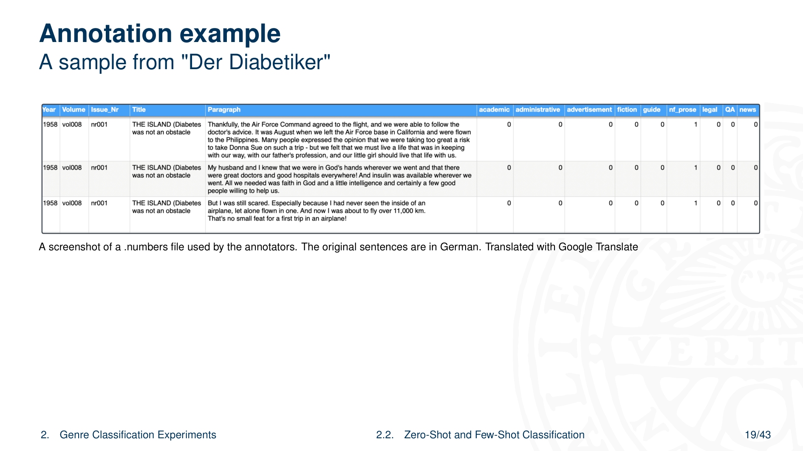

5 Genre Classification for Historical Medical Periodicals
Overview
This report systematically documents the research conducted within the ActDisease project at Uppsala University, focusing on genre classification for historical medical periodicals. Researchers aimed to develop automated methods for categorising diverse text types found in these publications, thereby enhancing their accessibility for digital humanities research. The project, funded by the ERC, investigates how patient organisations influenced modern medicine in 20th-century Europe, primarily utilising their periodicals as source material. The methodology encompassed rigorous data collection, addressing significant digitisation challenges such as Optical Character Recognition (OCR) errors and complex layouts. Experiments explored both zero-shot and few-shot classification approaches, employing multilingual encoder models like XLM-RoBERTa, mBERT, and historical mBERT, alongside instruction-tuned generative models such as Llama-3.1 8b Instruct. Key findings highlight the efficacy of genre classification in making heterogeneous historical sources amenable to text mining, demonstrating that leveraging modern datasets and few-shot learning with pre-trained multilingual encoders significantly improves performance, particularly for historical BERT models. Future work involves applying these methods to specific historical hypotheses, refining annotation schemes, generating synthetic data, and implementing active learning strategies.
5.1 Presentation Outline and Scope

This presentation systematically outlines the research on genre classification for historical medical periodicals. It commences by introducing the ActDisease project, detailing its objectives, the characteristics of its unique dataset, and the inherent challenges encountered during data digitisation. Subsequently, the report transitions to the core experimental work, elucidating the motivation behind genre classification, the methodologies employed for zero-shot and few-shot classification, and specific experiments involving the Llama-3.1 8b Instruct model. The presentation concludes by summarising key findings and discussing future research directions.
5.2 The ActDisease Project: Objectives and Scope

The ActDisease project, formally known as ‘Acting out Disease - How Patient Organizations Shaped Modern Medicine’, constitutes an ERC-funded research initiative. This endeavour primarily investigates the historical role of patient organisations in 20th-century Europe. Its central purpose involves scrutinising how these organisations influenced the evolution of disease concepts, the lived experience of illness, and prevailing medical practices. The project specifically focuses on ten European patient organisations across Sweden, Germany, France, and Great Britain, spanning the period from approximately 1890 to 1990. Patient organisation periodicals, predominantly magazines, serve as the main source material. Notably, the Hay Fever Association of Heligoland, founded in 1897, provides a historical anchor for the project’s scope.
5.3 ActDisease Dataset Composition

The ActDisease project leverages a substantial, recently digitised private collection of patient organisation magazines, collectively comprising 96,186 pages. This comprehensive dataset encompasses periodicals from several European countries, addressing a range of diseases. German contributions include two allergy/asthma magazines (10,926 pages, 1901-1985), one diabetes magazine (19,324 pages, 1931-1990), and one multiple sclerosis magazine (5,646 pages, 1954-1990). From Sweden, the collection features one allergy/asthma magazine (4,054 pages, 1957-1990), one diabetes magazine (7,150 pages, 1949-1990), and one lung diseases magazine (16,790 pages, 1938-1991). French sources comprise one diabetes magazine (6,206 pages, 1947-1990) and three rheumatism/paralysis magazines (9,317 pages, 1935-1990). Finally, the UK contributes one diabetes magazine (11,127 pages, 1935-1990) and one rheumatism magazine (5,646 pages, 1950-1990). Visual examples, such as the ‘BRA Review’ and ‘Allergia’ (5/1991), illustrate the diverse nature of these historical medical periodicals.
5.4 Digitization Challenges and OCR Issues

The digitisation process for the ActDisease dataset encountered several significant challenges, primarily stemming from Optical Character Recognition (OCR). Whilst ABBYY FineReader Server 14 generally performed well on common layouts and fonts, complex layouts, slanted text, rare fonts, and inconsistent scan or photo quality persistently challenged its accuracy. Consequently, the digitised texts exhibited remaining issues, notably OCR errors, particularly prevalent in German and French materials, and disrupted reading order. Researchers addressed these limitations by conducting experiments on post-OCR correction of German texts, employing instruction-tuned generative models. They observed frequent OCR errors within creative text types, such as advertisements, humour pages, and poems. This work aligns with ongoing research, including a publication by Danilova and Aangenendt on post-OCR correction of historical German periodicals using Large Language Models.
5.5 Challenges in Analysing Historical Periodicals

Analysing historical medical periodicals presents distinct challenges due to the inherent diversity of their textual content. These materials consistently feature a wide array of text types, a characteristic observed across all magazines within the collection. Critically, different genres frequently co-occur on a single page; for instance, an administrative report might appear alongside an advertisement and a humour section. This textual heterogeneity poses a significant problem for conventional analytical methods. Standard yearly and decade-based topic models or term counts fail to account for such intricate textual variations. Consequently, this unclassified mixture of genres introduces a likely bias into topic models and term counts, potentially distorting analytical outcomes.
5.6 Rationale for Genre Classification

Genre has emerged as a particularly useful concept within language technology, offering a robust framework for textual analysis. Researchers define genre as a class of documents united by a shared communicative purpose, a definition supported by scholars such as Petrenz (2004) and Kessler (1997). This classification approach directly supports the project’s key objective: to explore the historical material from diverse perspectives, thereby enabling more nuanced historical arguments. Crucially, genre classification facilitates the study of communicative strategies as they evolve over time, allowing for comparative analysis across different countries, diseases, and publications, as highlighted by Broersma (2010). Furthermore, it enables a fine-grained analysis of term distributions and topic models specifically within identified genres, offering deeper insights than broad, unclassified analyses.
5.7 Illustrating Genre Diversity: Poetry Example

To illustrate the inherent genre diversity within the historical medical periodicals, researchers present a scanned page featuring multiple text columns and an illustration of a human figure. This visual example clearly demonstrates how various text types coexist within a single publication. A specific section of the text is highlighted as ‘Poetry’, encased within a distinctive white box with a purple border. Surrounding this poetic content, other snippets are visible, including a discussion on ‘Människokroppen’ (The Human Body), a recipe for ‘Cadbury sugar-free chocolate for diabetics’, and practical instructions such as ‘Put oil in saucepan’. This composite layout underscores the challenge of analysing such materials without explicit genre classification.
5.8 Illustrating Genre Diversity: Patient Experiences

Further illustrating the textual heterogeneity within historical medical periodicals, another scanned page displays multiple text columns and an illustration. A specific text block is prominently labelled ‘Patient Experiences’, demarcated by a white box with a purple border. The embedded text vividly describes a personal narrative of awakening from a diabetic coma, recounting semi-conscious ramblings that were so realistic they remained imprinted on the memory. This example clearly demonstrates a distinct personal narrative genre. Other visible text snippets on the page include a continuation of the ‘Cadbury sugar-free chocolate’ recipe and instructions for ‘Put oil in saucepan’, reinforcing the co-occurrence of diverse content types.
5.9 Defining Genre Labels for Classification

Researchers meticulously defined the genre labels employed in this project under the direct supervision of the main historian, an expert in patient organisations. This interdisciplinary approach ensured that the genre categories possessed both historical relevance and practical utility. The labels proved instrumental in segmenting the diverse content within the materials, thereby facilitating more focused and granular historical analysis. Furthermore, the design principle prioritised general applicability, aiming for labels that could serve broad analytical purposes beyond the immediate dataset.
5.10 Operational Genre Definitions

For the purpose of genre classification, researchers established nine distinct categories, each with a precise operational definition. ‘Academic’ texts encompass research-based reports or explanations of scientific ideas, such as research articles or formal reports. ‘Administrative’ documents pertain to organisational activities, including meeting minutes, financial reports, or announcements. ‘Advertisements’ specifically promote products or services for commercial gain. ‘Guides’ offer step-by-step instructions, exemplified by health tips, legal advice, or recipes. ‘Fiction’ aims to entertain and emotionally engage, comprising stories, poems, humour, or myths. ‘Legal’ texts explain terms and conditions, such as contracts or amendments. ‘News’ reports recent events and developments. ‘Nonfiction Prose’ narrates real events or describes cultural and historical topics, encompassing memoirs, essays, or documentary prose. Finally, ‘QA’ (Question and Answer) refers to texts structured as questions followed by expert answers.
5.11 Dataset Annotation Methodology

Researchers meticulously annotated the dataset to establish ground truth for genre classification. The annotation unit was defined at the paragraph level, specifically ABBYY-generated paragraphs merged based on consistent font patterns, including type, size, bolding, and italics, within a single page. The annotation effort focused on two key periodicals: the Swedish ‘Diabetes’ and the German ‘Diabetiker Journal’, specifically their first and mid-year issues for each year. A multidisciplinary team comprising four historians and two computational linguists, all native or proficient in Swedish and German, performed the annotations. To ensure robustness and reliability, two independent annotations were collected for each paragraph. This rigorous process yielded a remarkably high average inter-annotator agreement of 0.95, as measured by Krippendorff’s alpha, indicating strong consistency across annotators.
5.12 Illustrative Annotation Example

An illustrative example from ‘Der Diabetiker’ vividly demonstrates the annotation process. Researchers organised the annotation data within a table format, featuring columns for ‘Year’, ‘Volume’, ‘Issue_Nr’, ‘Title’, and ‘Paragraph’, alongside binary indicators for each genre label: ‘academic’, ‘administrative’, ‘advertisement’, ‘fiction’, ‘guide’, ‘nf_prose’, ‘legal’, ‘QA’, and ‘news’. For instance, a paragraph from 1958, titled ‘THE ISLAND (Diabetes was not an obstacle)’, received a ‘1’ under ‘nf_prose’, whilst all other genre categories were marked ‘0’. Another paragraph from the same source similarly received a ‘1’ for ‘nf_prose’. Annotators utilised a .numbers file for this task. Although the original sentences were in German, they were translated using Google Translate for presentation purposes, ensuring clarity of the annotation assignments.
5.13 Dataset Splitting for Experiments

Researchers meticulously partitioned the ActDisease annotated dataset to facilitate various experimental setups. The main split comprised a training set of 1182 paragraphs and a held-out set of 552 paragraphs, constituting approximately 30% of the total data, with stratification applied by genre label to maintain distribution. For few-shot experiments, six distinct training set sizes—100, 200, 300, 400, 500, and the full 1182 paragraphs—were randomly sampled from the main training set, ensuring label balance within each subset. The held-out set was subsequently divided into equally sized validation and test sets, also balanced by label. Notably, the ‘legal’ and ‘news’ genres were excluded from these validation and test sets due to insufficient training data. For zero-shot experiments, the entire test set was utilised, allowing for evaluation without direct training on the ActDisease data.
5.14 Genre Distribution in ActDisease Dataset

The distribution of genres within the ActDisease dataset, across both training and held-out samples, is visually represented through two distinct bar charts. The left chart illustrates the number of training paragraphs categorised by language and genre, whilst the right chart presents the corresponding distribution for the held-out sample. Both charts employ a y-axis indicating the number of instances and an x-axis denoting the language, specifically German and Swedish. A comprehensive legend maps colours to each of the nine genre labels: ‘QA’, ‘academic’, ‘administrative’, ‘advertisement’, ‘fiction’, ‘guide’, ‘legal’, ‘news’, and ‘non_fiction_prose’. These visualisations reveal varying frequencies; for instance, ‘advertisement’ appears as a dominant genre within the German training set, whilst ‘guide’ shows prominence in the Swedish held-out set, highlighting the heterogeneous nature of the dataset’s composition.
5.15 External Datasets for Zero-Shot Classification

For zero-shot classification experiments, researchers leveraged several publicly available external datasets. Two primary Automatic Genre Identification datasets, annotated at the document level, included the Corpus of Online Registers of English (CORE), developed by Egbert et al. (2015), which primarily features English texts but also includes main categories in Swedish, Finnish, and French. The Functional Text Dimensions (FTD) dataset of web genres, introduced by Sharoff (2018), provides a balanced collection of English and Russian texts, having previously served in automatic web genre classification, as noted by Kuzman et al. (2023). Additionally, the UD-MULTIGENRE (UDM) dataset, a subset of Universal Dependencies (de Marneffe et al., 2021), offered sentence-level genre annotations across 38 languages, with recovered annotations by Danilova and Stymne (2023). These diverse datasets provided crucial external knowledge for cross-dataset genre classification.
5.16 Cross-Dataset Genre Mapping

To enable zero-shot learning across diverse datasets, researchers meticulously mapped genre labels between the ActDisease project’s categories and those found in CORE, UDM, and FTD. For instance, ‘Academic’ in ActDisease corresponds to ‘research article (RA)’ in CORE, ‘academic’ in UDM, and ‘academic (A14)’ in FTD. ‘Administrative’ uniquely maps to ‘parliament’ in UDM, lacking direct equivalents in CORE or FTD. ‘Advertisement’ aligns with ‘advertisement (AD)’ and ‘description with intent to sell (DS)’ in CORE, and ‘commercial (A12)’ in FTD. ‘Guide’ finds multiple mappings in CORE, including ‘how-to (HT)’ and ‘recipe (RE)’, whilst directly mapping to ‘guide’ in UDM and ‘instruct (A7)’ in FTD. ‘Fiction’ is represented by ‘poem (PO)’ and ‘short story (SS)’ in CORE, ‘fiction’ in UDM, and ‘fictive (A4)’ and ‘poetic (A19)’ in FTD. ‘Legal’ maps to ‘legal terms and conditions (LT)’ in CORE, ‘legal’ in UDM, and ‘legal (A9)’ in FTD. ‘News’ corresponds to ‘news report/blog (NE)’ in CORE, ‘news’ in UDM, and ‘reporting (A8)’ in FTD. ‘Nonfiction’ encompasses a broad range, including various blog types and articles in CORE, ‘nonfiction prose’ and ‘blog’ in UDM, and ‘personal (A11)’ and ‘argumentative (A1)’ in FTD. Finally, ‘QA’ maps to ‘question/answer forum (QA)’ and ‘advice (AV)’ in CORE, and ‘QA’ in UDM, with no direct FTD equivalent. This comprehensive mapping ensures comparability across the disparate datasets.
5.17 Training Data Creation and Configuration

Researchers meticulously crafted the training data through a multi-stage pipeline, beginning with a ‘Genre Map’ and subsequent ‘Mapping’ process that populated a ‘DataFrame’ designated ‘new genre mapping’. This DataFrame then underwent a crucial ‘Pre-process’ step, which systematically removed web addresses, emails, XML-tags, and emojis to clean the data. Following this, the data entered a ‘SAMPLING’ stage. The process integrated three external datasets—CORE, FTD, and UDM—as inputs to the initial mapping. Four distinct configuration options guided the data preparation: ‘[G+]’ restricted the dataset to only Germanic languages, whilst ‘[G-]’ included all language families. Concurrently, ‘[B1]’ implemented balancing based on the ActDisease project’s defined labels, and ‘[B2]’ combined balancing by ActDisease labels with the original labels from the source datasets. These language scope and balancing methods were combined, as indicated by connections between [G+] and [G-] with [B1] and [B2]. Visual representations of the sampled data, including four FTD training samples, four CORE training samples (specifically G+ B1, G+ B2, G- B1, G- B2), and UDM training samples, illustrate the comprehensive nature of this data preparation pipeline.
5.18 Multilingual Encoder Models Utilised
Researchers employed a selection of multilingual encoder models for the genre classification task. The primary models included XLM-Roberta, introduced by Conneau et al. (2020), mBERT, developed by Devlin et al. (2019), and a specialised historical mBERT, presented by Schweter et al. (2022). BERT-like models, such as these, have seen extensive application in prior work for web register and genre classification, as evidenced by studies from Lepekhin and Sharoff (2022), Kuzman and Ljubešić (2023), and Laippala et al. (2023). XLM-RoBERTa stands out as a state-of-the-art web genre classifier, according to Kuzman et al. (2023). The historical mBERT model, specifically, benefits from pretraining on a substantial corpus of multilingual historical newspapers, rendering it particularly relevant for this project. Conversely, mBERT served as a comparative baseline against hmBERT, given their non-direct comparability with XLM-Roberta.
5.19 Model Fine-tuning Process

Researchers systematically fine-tuned the selected models through a structured process. Each training set was prepared in four distinct configurations, providing varied data inputs. These datasets included FTD (Functional Text Dimensions), CORE (Corpus of Online Registers of English), UDM (UD-MULTIGENRE), and a combined Merged dataset. A central ‘finetuning’ step applied uniformly across all three chosen models: XLM-Roberta, mBERT, and hmBERT. This comprehensive experimental setup ultimately yielded a total of 48 fine-tuned models, representing the permutations of dataset configurations and model types, ready for subsequent evaluation.
5.20 Zero-Shot Learning Evaluation Phase
This section initiates the evaluation phase for the zero-shot learning experiments, presenting the methodologies and results derived from the classification tasks performed without direct training on the target dataset.
5.21 Zero-Shot Prediction Evaluation Methodology

Evaluating zero-shot predictions presented a significant challenge due to the imperfect overlap of label sets across different datasets, which precluded direct comparison of overall performance metrics. Consequently, researchers adopted a granular approach, assessing the performance of each genre independently and meticulously analysing confusion matrices. The X-GENRE web genre classifier, as described by Kuzman et al. (2023), served as a crucial baseline. The evaluation specifically focused on predictions made on labels most similar to and directly mappable to the ActDisease categories. Furthermore, the experiments inherently involved cross-lingual scenarios: the FTD and X-GENRE datasets were entirely cross-lingual, lacking German or Swedish training data, whilst the UDM and CORE datasets exhibited partial cross-lingual characteristics.
5.22 Summary of Zero-Shot Classification Results

The zero-shot classification experiments yielded several key findings. Models fine-tuned on the FTD dataset demonstrated superior performance when employing the ActDisease genre mapping. Conversely, other datasets exhibited distinct class-specific biases. In the UDM dataset, a bias towards ‘news’ emerged, primarily because the news training data contained the highest number of Germanic instances, predominantly German. For the CORE dataset, a bias towards ‘guide’ was observed, as only the guide training data was truly multilingual. Intriguingly, XLM-Roberta, when trained on UDM, achieved an average of 32% more correct predictions in the ‘QA’ genre compared to mBERT and hmBERT. Conversely, hmBERT, also on UDM, showed an average of 16% more correct predictions in ‘Administrative’ texts than XLM-Roberta and mBERT. Furthermore, models trained on CORE consistently performed well in predicting the ‘legal’ genre.
5.23 Zero-Shot Classification Confusion Matrices
Four distinct confusion matrices visually represent the performance of various models and dataset configurations in the zero-shot classification task. Each matrix plots ‘True Genre’ against ‘Predicted Genre’, with a colour scale indicating the count of instances. The genres consistently include ‘QA’, ‘academic’, ‘administrative’, ‘advertisement’, ‘fiction’, ‘guide’, ‘legal’, ‘news’, and ‘nf_prose’. For instance, the ‘hmBERT_UDM_True_True’ matrix shows 43 instances of ‘academic’ and 31 instances of ‘guide’ were correctly classified, whilst 3 instances of ‘news’ were incorrectly predicted as ‘administrative’. The ‘xlmr_CORE_True_False’ matrix highlights 85 correct ‘guide’ predictions, but also 30 ‘academic’ instances misclassified as ‘administrative’. In the ‘xlmr_UDM_False_False’ matrix, 35 ‘administrative’ instances were correctly predicted, yet 8 ‘QA’ instances were misclassified as ‘administrative’. Finally, the ‘xlmr_FTD_False_False’ matrix demonstrates 108 correct ‘advertisement’ predictions, alongside 30 ‘news’ instances incorrectly classified as ‘administrative’. These matrices provide granular insights into the models’ strengths and specific misclassification patterns across different datasets.
5.24 Zero-Shot Per-Category F1 Scores

A comprehensive table presents the F1 scores for various genres and models across four distinct dataset configurations: FTD, CORE, UDM, and a merged dataset. The data is organised by dataset, then by model, including X-GENRE, hmBERT, mBERT, and XLM-RoBERTa, with columns representing each genre category. Notably, for the FTD dataset, XLM-RoBERTa consistently demonstrated strong performance, achieving an F1 score of 0.89 for ‘guide’, 0.82 for ‘legal’, and 0.74 for ‘advertisement’. Within the CORE dataset, both hmBERT and XLM-RoBERTa exhibited high F1 scores for ‘legal’, reaching 0.80 and 0.84 respectively. For the UDM dataset, XLM-RoBERTa secured the highest F1 for ‘QA’ at 0.53, whilst hmBERT led for ‘administrative’ at 0.43. Across the board, the ‘merged’ configuration generally yielded lower F1 scores for all models and genres when compared to individual dataset configurations. Bolded values within the table highlight the peak F1 score for each specific genre within its respective dataset configuration, providing clear quantitative insights into model performance.
5.25 Impact of Configuration on Zero-Shot Performance

Analysis of the average F1 performance across different configurations reveals distinct impacts on zero-shot classification. For the FTD dataset, configurations [B 1] and [G -] yielded the highest F1 scores of 0.56, whilst [B 2] and [G +] resulted in a decrease in performance. In the CORE dataset, F1 scores remained consistently around 0.32 across most configurations, with a marginal decrease to 0.31 for [G -]; the presence of a small number of Finnish and French instances, particularly within the ‘guide’ genre, marginally reduced overall performance. Conversely, for the UDM dataset, the presence of other language families and balancing strategies generally improved macro F1 performance, with [G -] achieving the highest score of 0.22 and [B 2] also performing strongly at 0.19. These findings underscore how data balancing and language family inclusion critically influence model efficacy in zero-shot settings.
5.26 Few-Shot Learning Evaluation Phase

This section marks the commencement of the evaluation phase for few-shot learning experiments, detailing the performance and insights derived from models trained on limited data samples.
5.27 Few-Shot Learning Performance Trends

A line graph visually depicts the performance of various models in a few-shot setting, illustrating the impact of Masked Language Model (MLM) fine-tuning. The x-axis represents dataset size, ranging from 200 to 1200 instances, whilst the y-axis indicates the F1 score, spanning from 0.2 to 0.8. Six distinct lines trace the performance of ‘hmbert’, ‘hmbert-mlm’, ‘mbert’, ‘mbert-mlm’, ‘xlmr’, and ‘xlmr-mlm’. Consistently, all models demonstrate an increasing trend in F1 score as the dataset size expands, underscoring the benefit of more training data. Crucially, further training on the ActDisease dataset, particularly with MLM fine-tuning, proves distinctly advantageous. Whilst F1 scores continue to rise with an increasing number of training instances, they remain below 0.8 even at the largest size of 1182. Notably, the hmBERT-MLM model consistently outperforms its counterparts, achieving the highest F1 scores.
5.28 Detailed Few-Shot Learning Performance Metrics
A comprehensive table details the performance of six distinct models—XLMR, XLMR-MLM, hmBERT, hmBERT-MLM, mBERT, and mBERT-MLM—across two training sizes: 500 and 1182 instances. The table presents F1 scores for individual genre categories, including ‘QA’, ‘academic’, ‘administrative’, ‘advertisement’, ‘fiction’, ‘guide’, and ‘nf_prose’, alongside overall metrics such as ‘accuracy’ and ‘macro_F1’. For ‘QA’, XLMR-MLM at 1182 instances achieved the highest F1 of 0.84. Both XLMR-MLM and mBERT-MLM reached an F1 of 0.81 for ‘academic’ at the largest training size. In ‘administrative’ classification, hmBERT-MLM and mBERT-MLM both attained an F1 of 0.86. XLMR-MLM demonstrated exceptional performance for ‘advertisement’, securing an F1 of 0.93. For ‘fiction’, mBERT-MLM achieved 0.62, whilst hmBERT-MLM reached 0.51. XLMR-MLM led in ‘guide’ classification with 0.79, and hmBERT-MLM achieved 0.82 for ‘nf_prose’. Overall accuracy ranged from 0.63 to 0.81, whilst macro_F1 scores spanned 0.61 to 0.77, with hmBERT-MLM at 1182 instances achieving the highest macro_F1 of 0.77. Shaded cells and bolded values visually highlight superior performance within each category and size, underscoring the benefits of MLM fine-tuning and increased training data.
5.29 Few-Shot Classification Confusion Matrix and Insights

A confusion matrix, specifically illustrating the XLM-Roberta-MLM classification results with a full-sized training dataset, provides granular insights into few-shot performance. The matrix plots ‘True Genre’ against ‘Predicted Genre’, encompassing ‘administrative’, ‘academic’, ‘fiction’, ‘nf_prose’, ‘QA’, ‘guide’, and ‘advertisement’ genres, with a colour scale indicating instance counts up to 120. For example, the model accurately predicted 59 ‘administrative’, 96 ‘nf_prose’, and 120 ‘advertisement’ instances. Qualitative observations derived from this analysis highlight several critical points. Researchers suggest that ‘fiction’ and ‘nonfictional prose’ may exhibit increasing similarity, posing a classification challenge. This phenomenon likely stems from the domain-specific nature of the dataset, as all genres are confined to patient organisation magazines primarily focused on diabetes. Consequently, both fictional and (auto)biographical texts frequently revolve around the experiences of diabetes patients, leading them to share common themes and narrative structures, which can blur genre boundaries.
5.30 Few-Shot Prompting Evaluation Phase

This section introduces the evaluation phase dedicated to few-shot prompting experiments, focusing on the performance of large language models when guided by specific instructions and limited examples.
5.31 Llama-3.1 8b Instruct Model Prompting

Researchers employed the Llama-3.1 8b Instruct model for few-shot prompting, providing it with a precise instruction: ‘Label the text with one of the following genres based on their purpose and content:’. This instruction was accompanied by explicit definitions for each genre. ‘Academic’ encompassed research-based articles and popular science. ‘Administrative’ included documents like meeting minutes and financial reports. ‘Advertisement’ covered promotions and invitations. ‘Guide’ provided dietary advice, exercise instructions, or recipes. ‘Fiction’ comprised poems, short stories, and humour. ‘Legal’ referred to contracts and terms. ‘News’ denoted daily reports. ‘Nonfictional_prose’ covered autobiographies, memoirs, and essays. ‘QA’ described question-answer formatted texts. An ‘Examples:’ section further guided the model, whilst the input format was specified as ‘[INST] test[i]“text” [/INST]’, with an expected ‘Genre:’ output. This detailed prompt engineering aimed to optimise the model’s genre classification capabilities.
5.32 Llama-3.1 8b Instruct Performance

The Llama-3.1 8b Instruct model demonstrated varied performance across genres in the few-shot prompting setup. Its F1-scores included 0.62 for ‘QA’, 0.72 for ‘academic’, 0.60 for ‘administrative’, 0.73 for ‘advertisement’, 0.64 for ‘fiction’, and 0.61 for ‘guide’. Notably, the model achieved its highest F1 score of 0.84 for ‘legal’ texts. Conversely, its performance on ‘news’ was exceptionally low, yielding an F1 of merely 0.08, whilst ‘nonfiction_prose’ scored 0.49. Overall metrics indicated an accuracy of 0.62, a macro average F1 of 0.59, and a weighted average F1 of 0.63. A visual confusion matrix, depicting few-shot prediction performance on the entire held-out set (used as a zero-shot test set), further illuminated these results. It showed successful classification for many genres, with 18 ‘QA’, 54 ‘academic’, 58 ‘administrative’, 77 ‘advertisement’, 30 ‘fiction’, 28 ‘guide’, 27 ‘legal’, and 49 ‘nf_prose’ instances correctly predicted. However, the matrix starkly highlighted the model’s struggle with ‘news’, correctly predicting only 1 instance, whilst misclassifying 8 instances as ‘nf_prose’, underscoring a significant area for improvement.
5.33 Challenges of Popular Magazine Text Mining

A primary conclusion drawn from this research highlights the inherent complexity of text mining popular magazines. Unlike more homogeneous scientific journals and books, these periodicals frequently contain a multitude of genres. This textual diversity significantly increases the challenge of extracting meaningful information and patterns through automated text mining techniques.
5.34 Enabling Text Mining through Genre Classification

Whilst popular magazines inherently present a multitude of genres, rendering text mining more challenging than for scientific journals and books, a crucial finding emerges: genre classification offers a viable solution. By systematically categorising the diverse content, genre classification effectively renders these complex historical sources accessible for advanced text mining methodologies, thereby unlocking their rich informational potential.
5.35 Key Conclusions and Performance Insights
The research yields five pivotal conclusions regarding genre classification in historical medical periodicals. Firstly, popular magazines, unlike more uniform scientific publications, contain a multitude of genres, which inherently complicates text mining efforts. Secondly, the implementation of genre classification effectively addresses this challenge, rendering these rich historical sources accessible for advanced text mining. Thirdly, even in the absence of specific training data, researchers successfully demonstrated the feasibility of leveraging existing modern datasets for effective classification. Fourthly, open generative models proved capable of achieving a decent quality of classification. Finally, and most significantly, few-shot learning applied to multilingual encoders, particularly when combined with prior Masked Language Model (MLM) fine-tuning, exhibited superior performance. This approach yielded particularly strong gains for the historical multilingual BERT model, achieving a 24% improvement, notably surpassing the 14.5% gain for mBERT-MLM and 16.9% for XLM-RoBERTa.
5.36 Future Research Directions
Future research within the ActDisease project will pursue several promising directions. Researchers plan to engage more deeply with specific historical hypotheses, leveraging the genre classification framework to address nuanced questions. A key methodological development involves crafting a new annotation scheme designed to capture more fine-grained genre distinctions. To support this, an annotation project, financed by Swe-CLARIN, is currently underway. Furthermore, the team intends to explore advanced data augmentation techniques, specifically through synthetic data generation, to expand the training corpus. Finally, the implementation of active learning strategies will optimise the annotation process, ensuring efficient and targeted data collection for continuous model improvement.